🌿 O que é o Patuna Chasm?
O Patuna Chasm é uma trilha natural localizada na região de Wairarapa, na Nova Zelândia. O percurso acontece dentro de um rio transparente, passando entre enormes paredões de pedra, mata nativa e formações naturais impressionantes.
O local é conhecido pela preservação da natureza e pela experiência única de caminhar dentro da água durante boa parte da trilha.
✨ Minha experiência
O passeio no Patuna Chasm foi um dos primeiros que fiz junto da minha host family na Nova Zelândia. Já no caminho, a paisagem chamava atenção: morros enormes, muita vegetação e uma sensação de tranquilidade difícil de explicar.
Depois de descermos uma trilha pela mata, chegamos ao rio — e foi ali que começou uma das experiências mais diferentes que já vivi.
A trilha era feita literalmente andando dentro da água, passando entre paredões gigantes de pedra, árvores fechando a luz do sol e paisagens que pareciam cenas de filme.
A água era extremamente transparente e muito gelada, mas toda a experiência transmitia uma mistura de paz, aventura e conexão com a natureza.
Uma das coisas que mais me marcou foi ver como aquele lugar era preservado e valorizado. Tudo parecia muito bem cuidado, mantendo a natureza praticamente intacta.
🔗 Link
📸 Galeria
Algumas imagens desse passeio inesquecível em meio à natureza da Nova Zelândia.
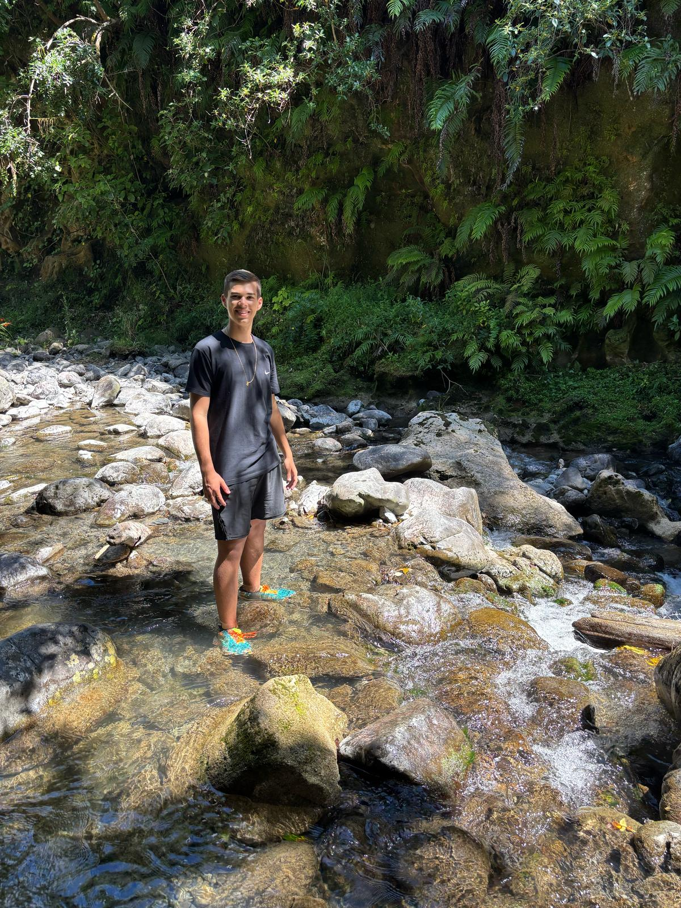
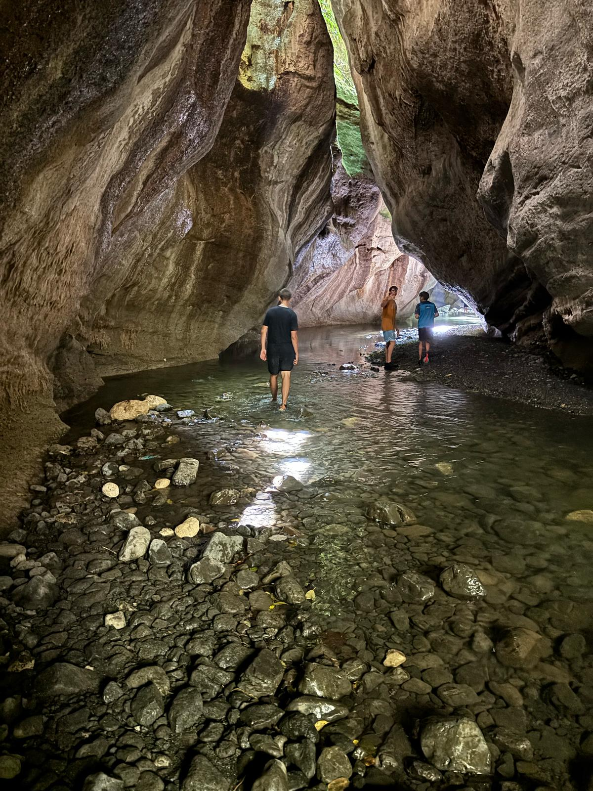
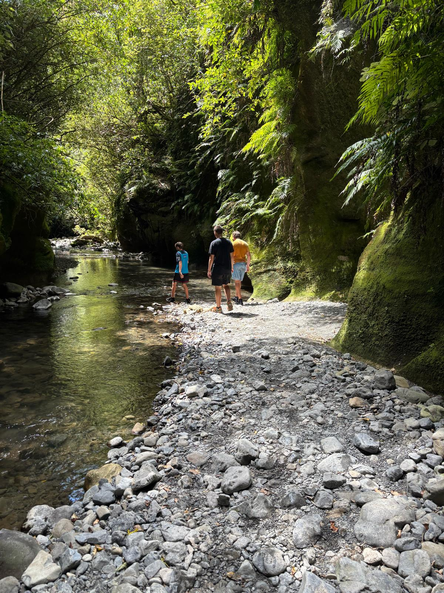
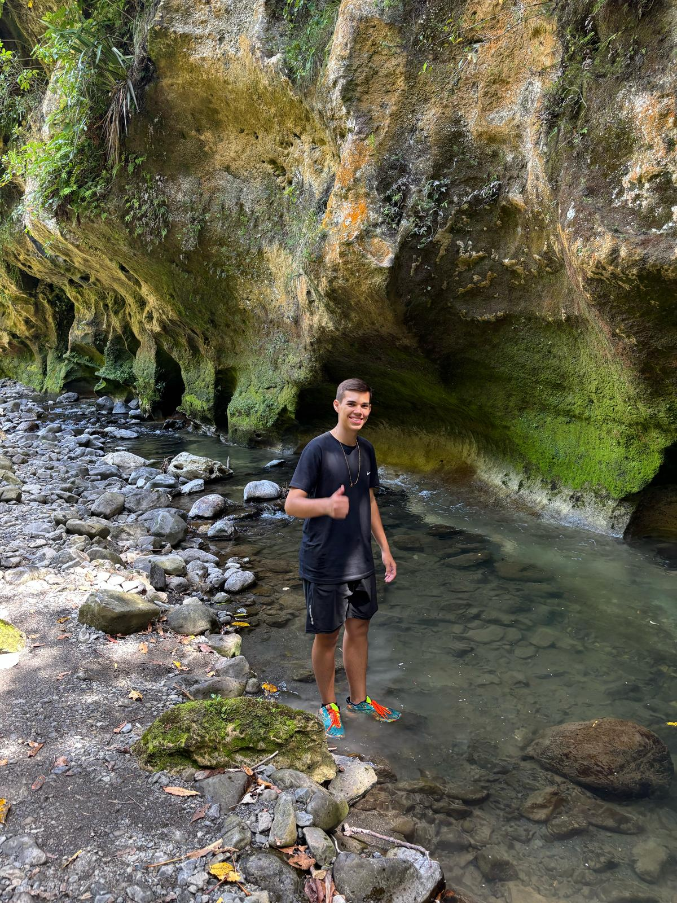
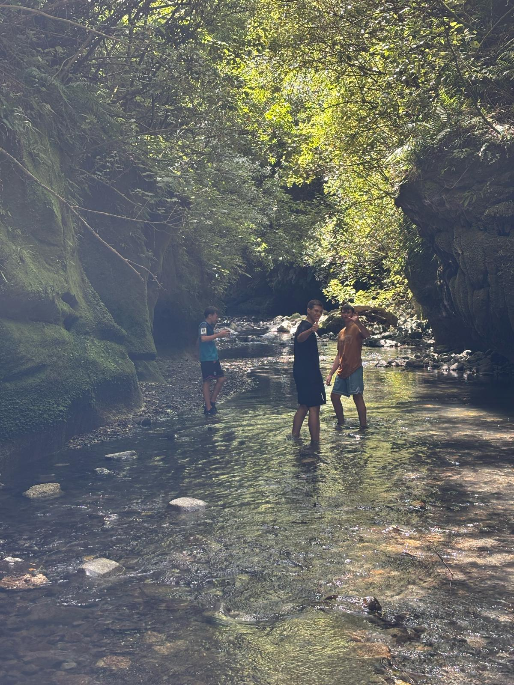
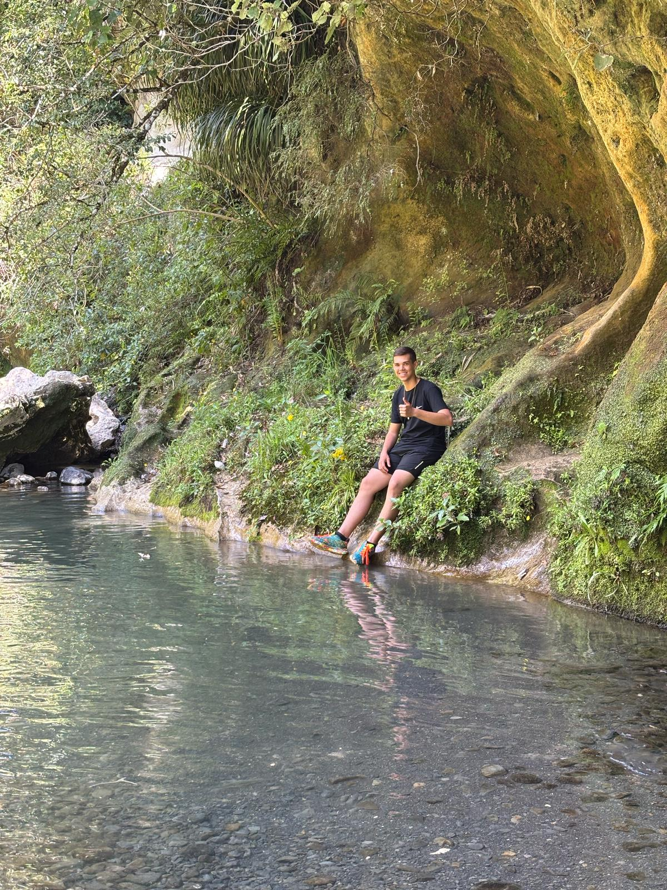
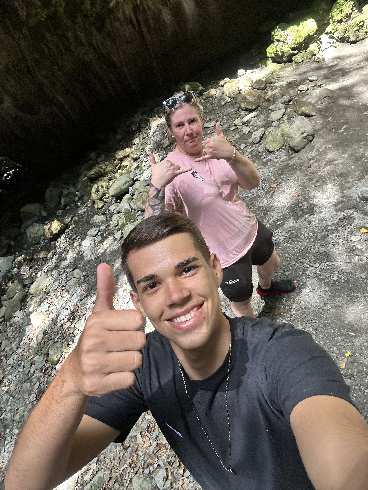
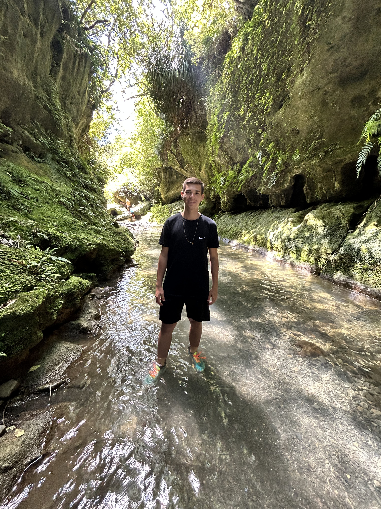
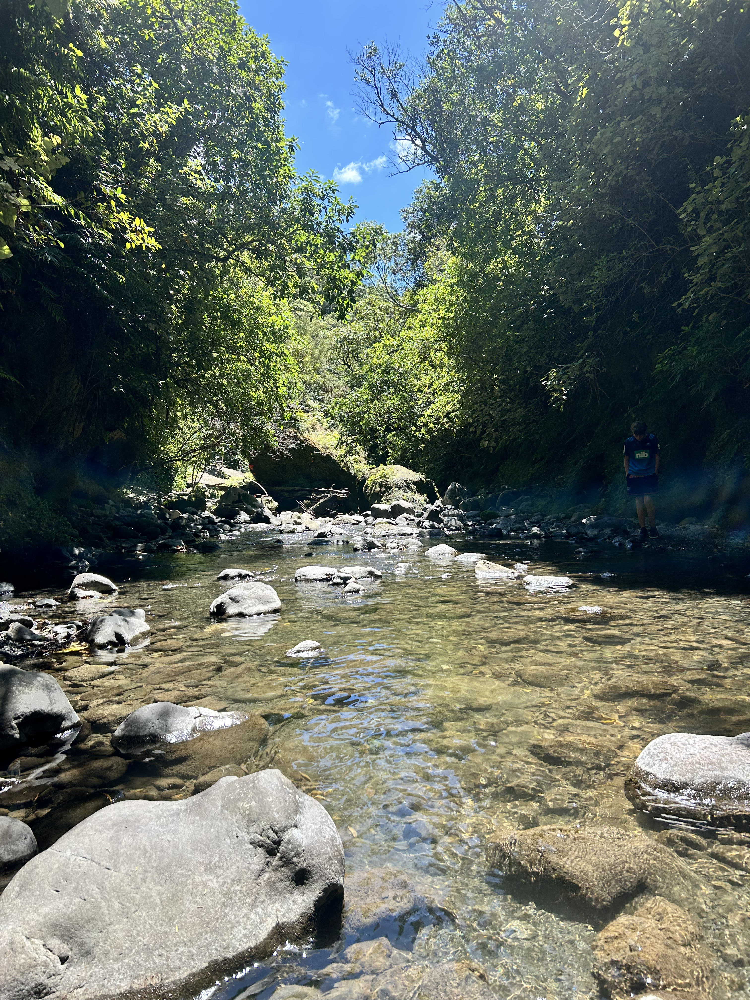
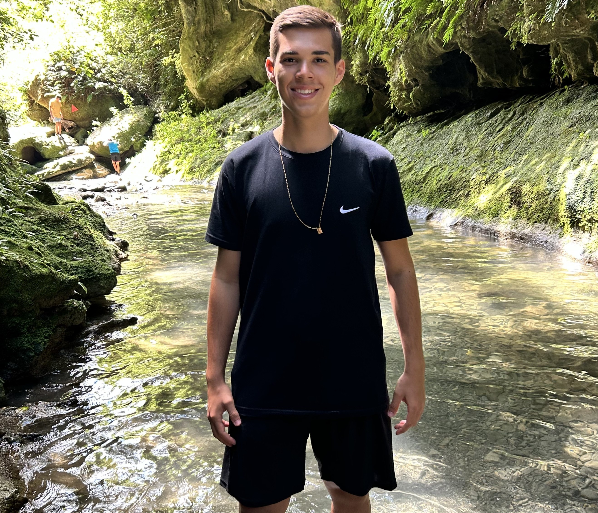
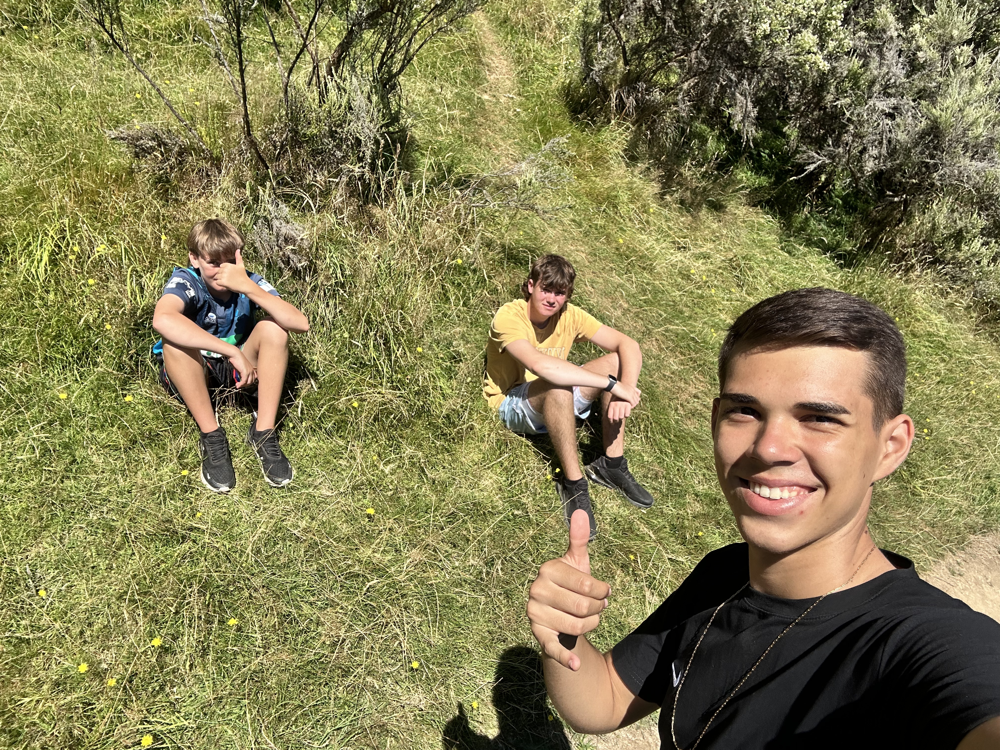
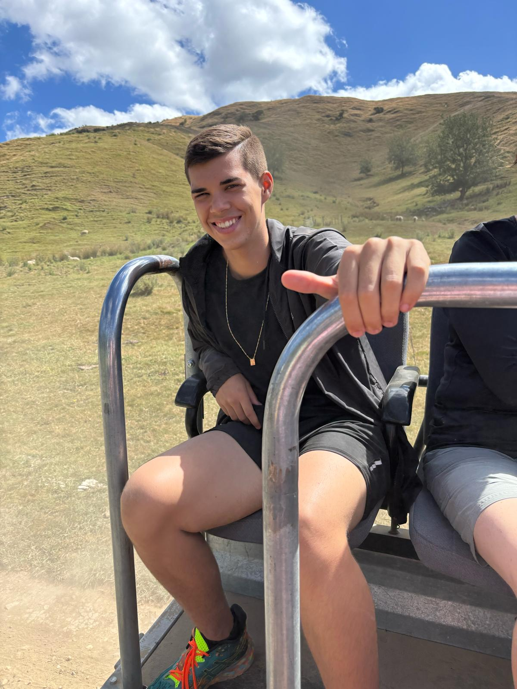